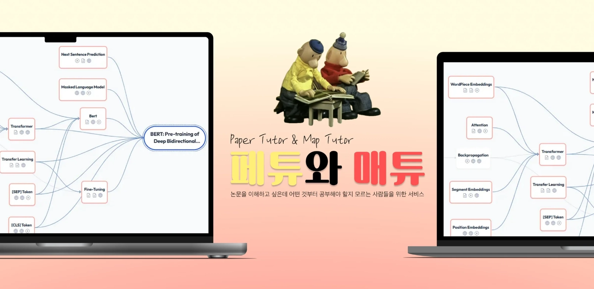
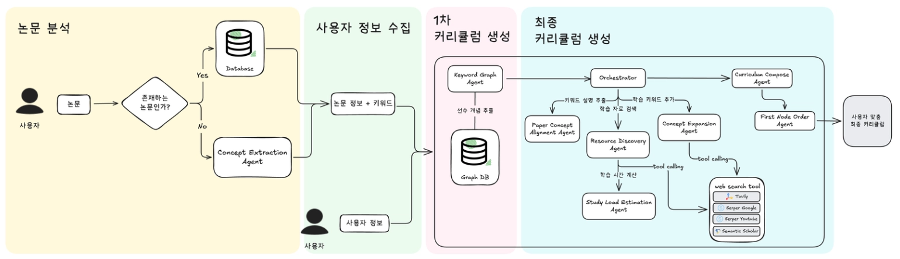
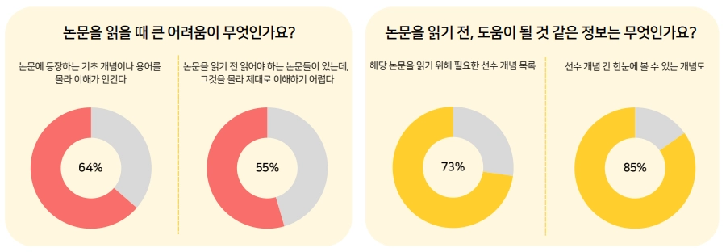
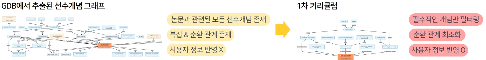
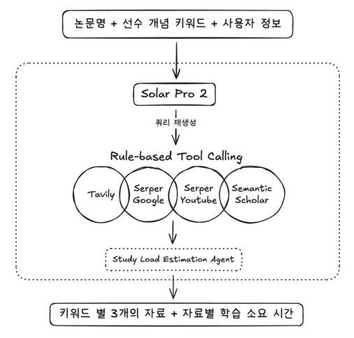
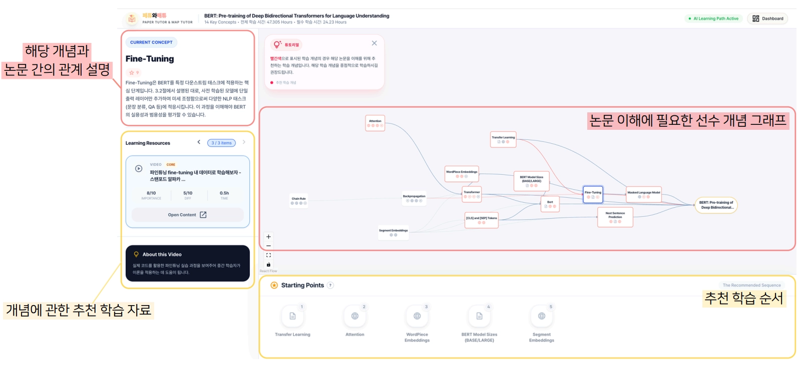

| 관계 유형 | 구조 | 의미 (Description) |
|---|---|---|
| PREREQ | A → B | A가 B의 선수 지식임 (B를 알려면 A를 알아야 함) |
| IN | A → 논문 | 논문을 이해하기 위한 선수 개념이 A임 |
| ABOUT | 논문 → A | 논문의 주요 제안/핵심 개념이 A임 |


(Quality * 1.5) + Preference Weight 기반 상위 자료 추출